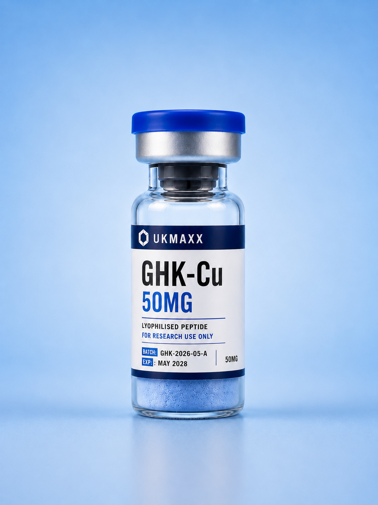
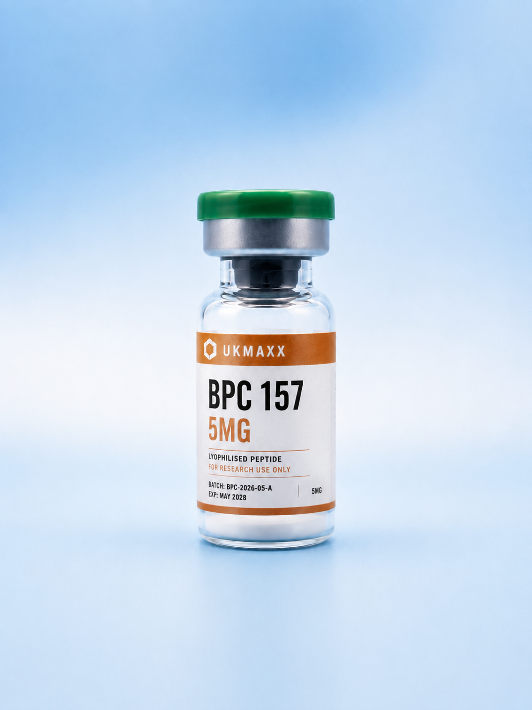
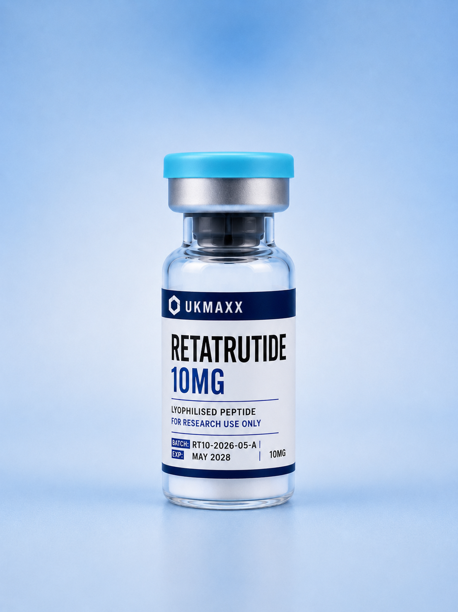
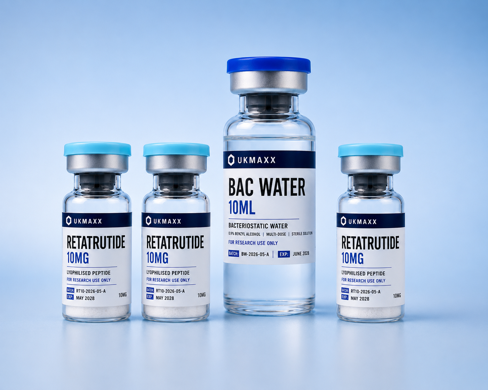
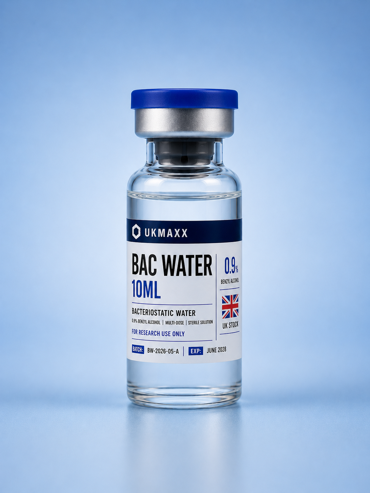
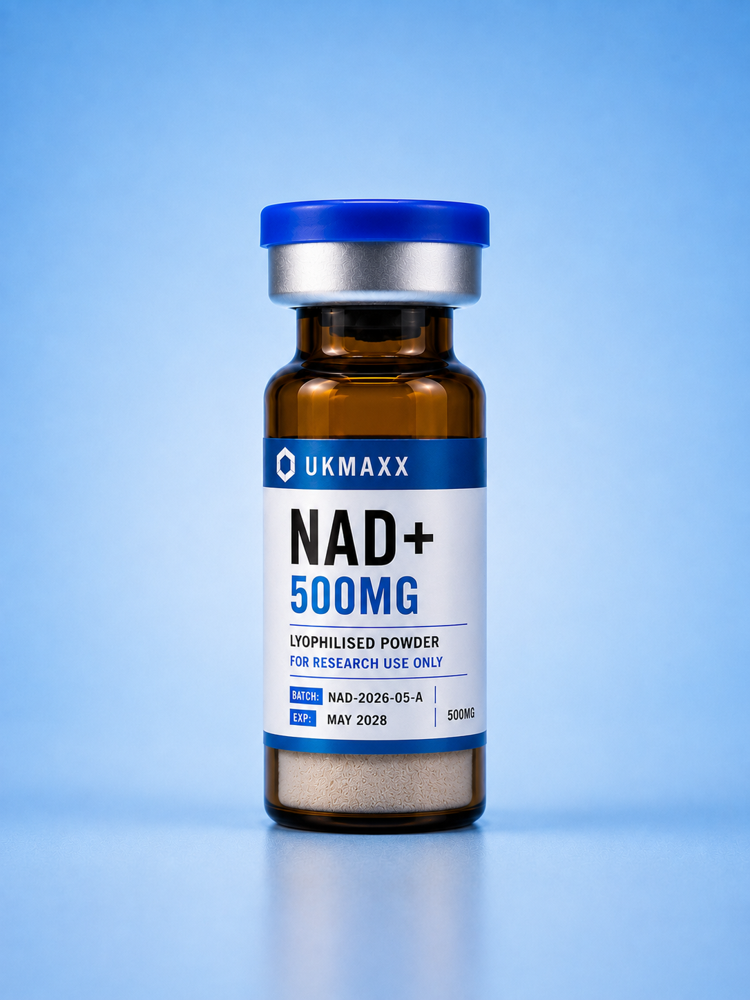

Copper peptide
GHK-Cu 50mg
Studied in copper signalling and extracellular-matrix research.
You must be 18 or older to access this site. All products are supplied strictly for laboratory and in-vitro research use only. Not for human consumption.
By entering you confirm you are a qualified researcher aged 18 or older acting in compliance with all applicable laws.
Browse UK-stocked research peptides with published batch records, independent laboratory results and Royal Mail Tracked 24 dispatch.
Browse current UK-stocked research peptides, with published batch records and independent laboratory results.

Studied in copper signalling and extracellular-matrix research.

Studied in preclinical tissue-protection and repair models.

Targets GIP, GLP-1 and glucagon receptors in metabolic research.

Three RT10 vials from one verified batch, plus one BAC Water.
View RT10 bundle →Supporting products for documented laboratory research workflows.

Support water for compatible laboratory reconstitution workflows.

Studied in cellular energy, redox and mitochondrial research.
Check active, archived and rejected batches, assay results, remaining stock and the original laboratory certificate.
See how a real UKMAXX order connects protective packing and batch cards to its public laboratory record.
Read the article →Compare lyophilised and liquid formats through storage, testing, convenience and traceability.
Read the comparison →Why a laboratory report is stronger when it is connected to batch size, availability and release decisions.
Read the article →Straight answers for UK researchers checking stock, COAs, dispatch and batch verification before ordering.
UK research peptides are peptide materials supplied from UK stock for laboratory and in-vitro research workflows. UKMAXX products are strictly research-use only and are not for human consumption.
Released UKMAXX peptide batches are linked to published third-party COA records where identity, purity, method and test date can be checked against the batch code.
Use the batch code supplied with your order and compare it against the UKMAXX COA checker. The checker shows active, archived and rejected batch records.
Yes. UKMAXX stock is held in the UK and dispatched to UK addresses using Royal Mail Tracked 24, with same-day dispatch on working-day orders placed before 2PM.
No. UKMAXX products are supplied strictly for laboratory and in-vitro research use only. They are not medicines, food supplements or products for human consumption.
Check the published COA records first, then browse current UK stock when you are ready.